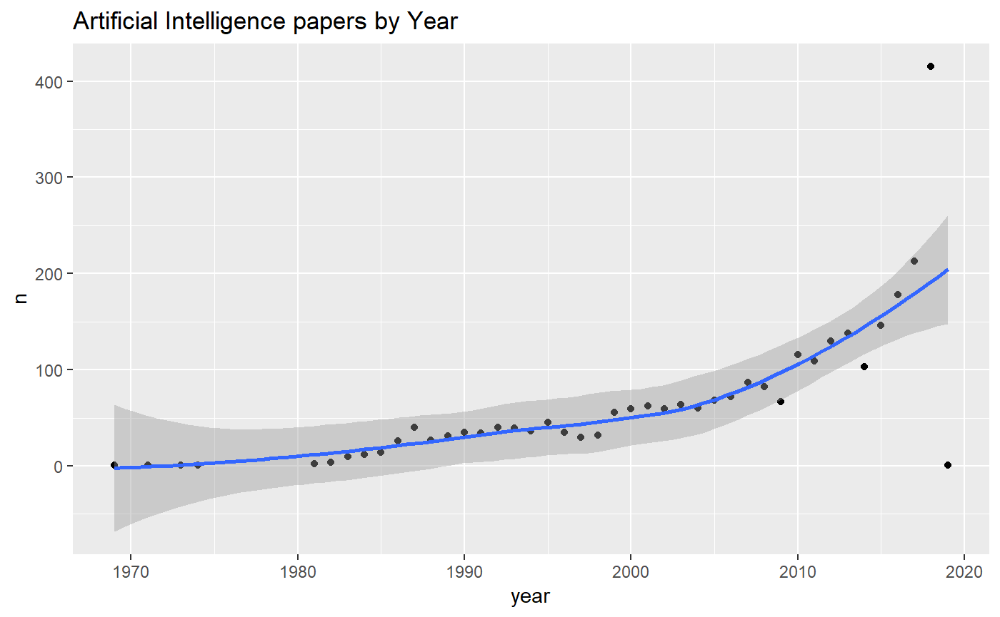

vignettes/artificial_intelligence_evolution.Rmd
artificial_intelligence_evolution.Rmdlibrary(petro.One)
library(dplyr)
#>
#> Attaching package: 'dplyr'
#> The following objects are masked from 'package:stats':
#>
#> filter, lag
#> The following objects are masked from 'package:base':
#>
#> intersect, setdiff, setequal, union
library(ggplot2)
# provide two different set of keywords to combine as vectors
major <- c("artificial intelligence")
results <- run_papers_search(major,
get_papers = TRUE, # return with papers
verbose = FALSE, # show progress
len_keywords = 4, # naming the data file
allow_duplicates = FALSE) # by paper title and id
#>
#> NULL
(papers <- results$papers)
#> # A tibble: 2,786 x 7
#> book_title paper_id dc_type authors year source keyword
#> <fct> <fct> <fct> <chr> <int> <fct> <chr>
#> 1 Artificial Inte~ SPE-19282~ confere~ Hojageldiyev~ 2018 SPE 'artifi~
#> 2 Production Moni~ SPE-14959~ confere~ Olivares Vel~ 2012 SPE 'artifi~
#> 3 Formation Dip D~ SPWLA-198~ journal~ Kerzner, Mar~ 1983 SPWLA 'artifi~
#> 4 Estimating Dewp~ SPE-16091~ confere~ Alarfaj, Mal~ 2012 SPE 'artifi~
#> 5 Multilateral We~ SPE-18350~ confere~ Al-Mashhad, ~ 2016 SPE 'artifi~
#> 6 Artificial Inte~ SPE-19155~ confere~ Gupta, Supri~ 2018 SPE 'artifi~
#> 7 Multilateral We~ SPE-18368~ confere~ Buhulaigah, ~ 2017 SPE 'artifi~
#> 8 Application of ~ SPE-15908~ general Gangopadhyay~ 1986 SPE 'artifi~
#> 9 Profiling Downh~ SPE-17342~ confere~ AlAjmi, Moha~ 2015 SPE 'artifi~
#> 10 Industrial Appl~ PETSOC-95~ confere~ Cercone, N.,~ 1995 PETSOC 'artifi~
#> # ... with 2,776 more rows# plot on AI by year of publication
papers %>%
group_by(year) %>%
na.omit() %>%
summarize(n = n()) %>%
ggplot(., aes(x = year, y = n)) +
geom_point() +
geom_smooth(method = "loess") +
labs(title = "Artificial Intelligence papers by Year")